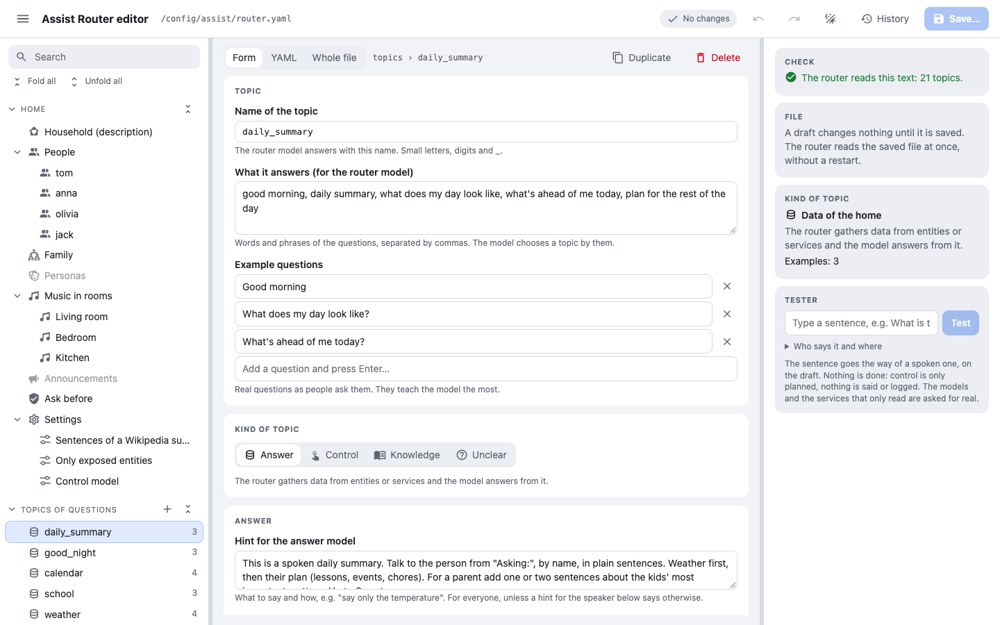
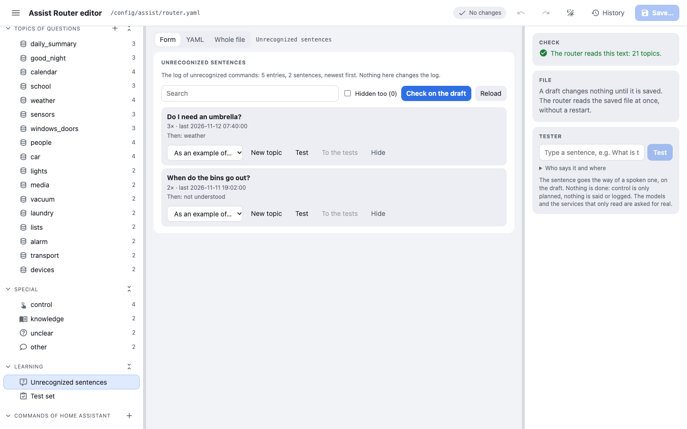
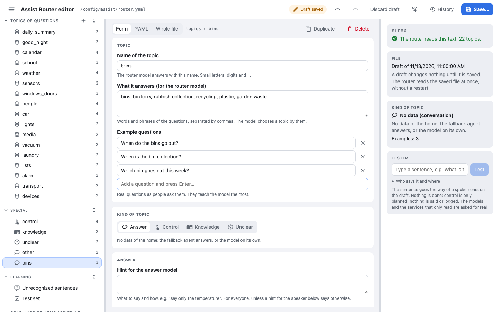
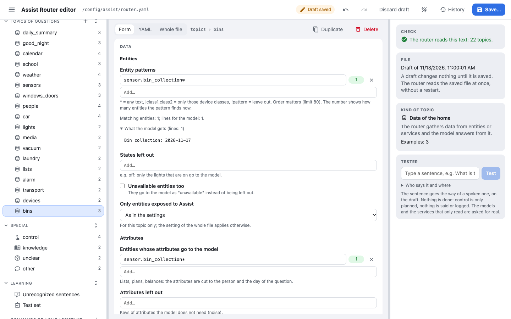
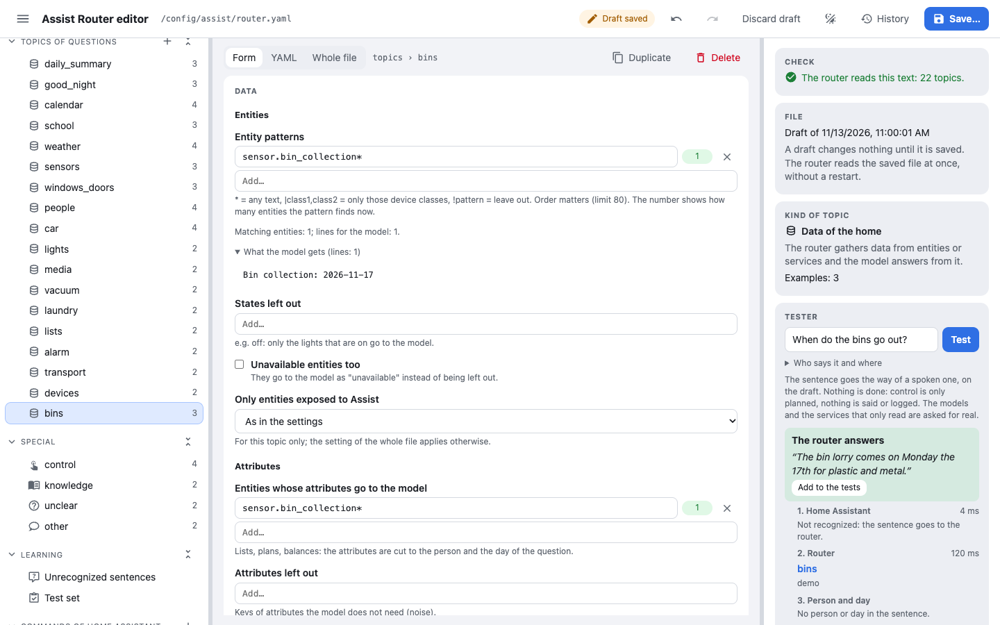
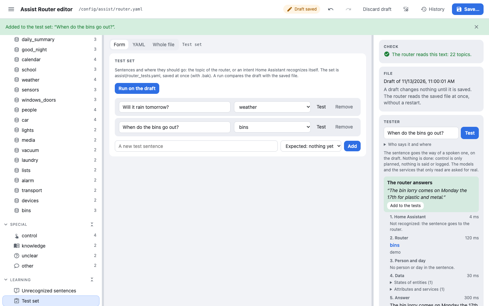
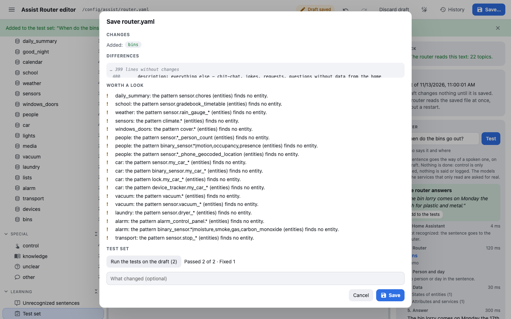
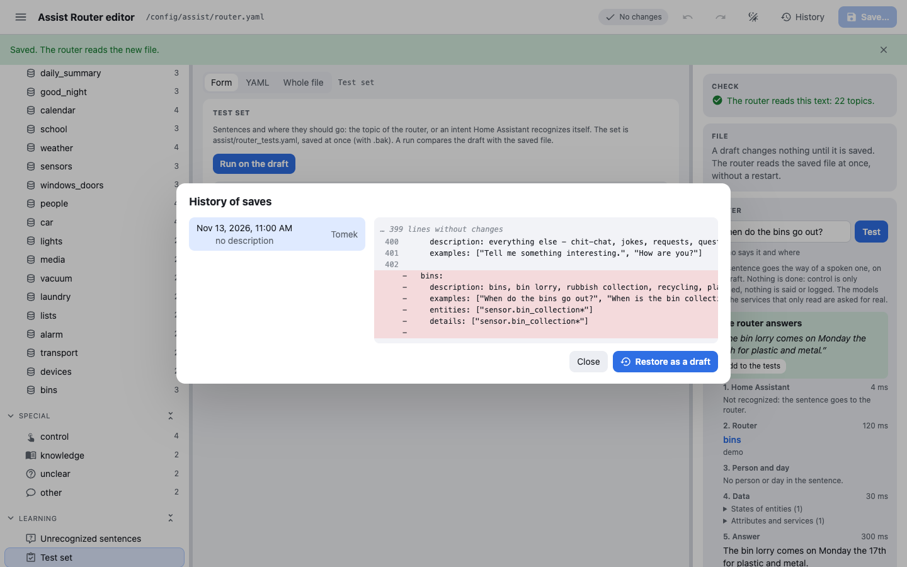
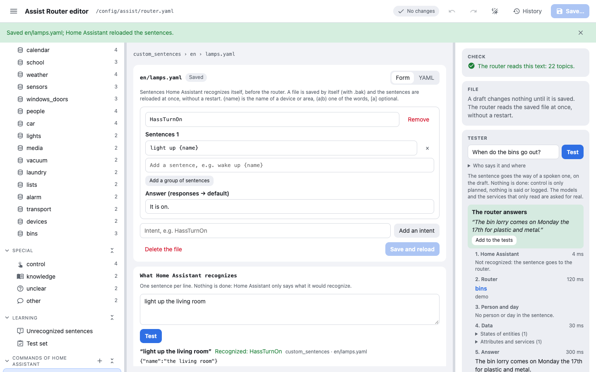

How to build a new feature of the assistant without writing YAML: from a sentence the assistant did not understand, through a new topic with data, a test and saving, to a command of Home Assistant. The names of buttons and fields are those of the editor, and the pictures come from the demo with a made-up home.
← Assist Router documentation · Polski · English · GitHub
The editor is a panel in Home Assistant where you build what the assistant can do: topics of questions with the
data of your home, and commands that Home Assistant recognizes by itself. No YAML is needed: every element has a
form, and router.yaml changes only when you save.
/assist-router-editor.make ui in the repository opens the editor on the example
file with a made-up home. Nothing is saved there. All the pictures below come from it.The example that runs through the whole guide: people at home ask "When do the bins go out?" and the
assistant does not understand. In a few steps a topic bins answers from the bin collection sensor, and a
command "light up {name}" is added to Home Assistant.
The screen has three columns. Drag a border to change a width; a double click gives the first one back.

daily_summary open in its form.custom_sentences, with a + button.The best new features are the ones people at home already asked for. Click Learning → Unrecognized sentences.

In the example, "When do the bins go out?" went to "not understood". Click New topic beside it.
New topic makes a topic with this sentence as its description and first example and opens its form at once. An empty topic is also added with + beside Topics of questions.
_, e.g. bins.
The router model answers with this name. Renaming changes the key in the file.
The Kind of topic is set with Answer, Control, Knowledge and Unclear. A question about the data of the home is an Answer. The right column shows how the router sees the topic: once data is added, it changes to Data of the home.
Below, under Answer, are Hint for the answer model (e.g. "say the day of the week and the kind of bin"), Hints for who asks (0) (the number says how many there are), Longest answer (tokens) and About who asks.
A topic answers from the data you point it to. Scroll to Data.
sensor.bin_collection*. The star is any text. The green number beside it says how many entities the
pattern finds now; zero is marked in orange.sensor.bin_collection*, so the model knows
the kind of bin.calendar.get_events.
Services are not called while you type; only Fetch the data now calls them, and only services that just
return data.
A 0 beside a pattern is the most common mistake: the pattern fits no entity (a typo, another domain), or a name of an attribute was typed in Entities whose attributes go to the model instead of a pattern of entities.
The tester sends a sentence along the way of a spoken one, on the draft, without saving. Type a sentence in the right column (Tester) and click Test.

bins and the model's answer; the steps of the way below.Who says it and where sets the speaker, persona, room and a comparison with the saved file. The tester does nothing in the home: control is only planned, nothing is said or logged. The models and the services that only read are asked for real.
When the router chooses the wrong topic, improve What it answers (for the router model) or add an example, and test again.
A sentence that works is worth keeping, so the next change does not break it. In the tester click
Add to the tests. The set is in Learning → Test set (the file
assist/router_tests.yaml, saved at once with a .bak copy).

Click Save… at the top. The Save router.yaml window shows everything before the file changes:

The editor does not save a text the router cannot read. The router reads the saved file at once, without a
restart, and the previous one stays as router.yaml.bak.
History at the top opens History of saves: the last 30 saves with their date, note and author. A chosen version shows its differences from the current file.

bins (lines in red).Restore as a draft loads that version into the draft; the file changes only when you save. Before saving, Discard draft throws all changes away.
Not every sentence needs the router. Home Assistant recognizes simple commands by itself, faster and without a
model, when they are added to custom_sentences. Those files are in Commands of Home Assistant.
lamps.yaml.HassTurnOn, HassTurnOff) work at once.light up {name}. {name} is the name of a device or an area, (a|b)
one of the words, [a] an optional word. Add a group of sentences starts another group..bak copy
and reloads the sentences, so the command works at once, without a restart.
en/lamps.yaml saved and reloaded; “light up the living room” → Recognized: HassTurnOn with name = the living room.An intent Home Assistant cannot run (not built in and without an intent_script) is
marked: the sentence is recognized, but nothing happens.
A file of commands is saved on its own, not with the draft of router.yaml. Delete the file
keeps it as .bak.
| What you see | Why | What to do |
|---|---|---|
| 0 beside an entity pattern | The pattern fits no entity. | Check the entity id in Home Assistant; Entities whose attributes go to the model takes patterns of entities, not names of attributes. |
| Kind of topic: No data (conversation) | The topic has no source of data. | Add Entity patterns or a service under Data. |
| The tester chooses another topic | The description or examples are close to another topic. | Add words to What it answers (for the router model) and real questions to Example questions. |
| Check: "The router will not read this text:" | The text in the YAML tab is not valid YAML. | Fix the line of the message or undo (Ctrl+Z). |
| "router.yaml was changed outside the editor meanwhile." | The file was changed elsewhere after the draft began. | Save anyway overwrites those changes; the save window shows the differences. |
| "Home Assistant has no handler of …" | The intent is not built in and has no intent_script. |
Choose a known intent or add an intent_script. |
| The browser warns that the tab uses a lot of energy or memory | Up to 0.1.6 the editor read router.yaml again on every change of a state in the home. |
Update to 0.1.7 or later and load the tab again. |
| No panel in the sidebar | The account is not an administrator, or the panel is hidden. | Open /assist-router-editor or turn on Show the editor in the sidebar. |
Every field and option is described in chapter 5 of the documentation.